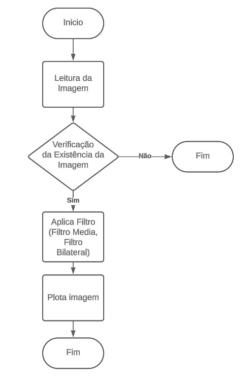
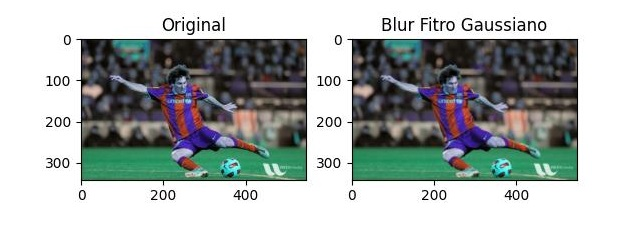
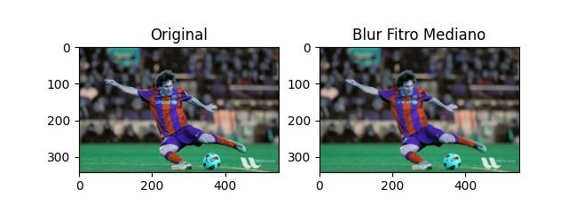
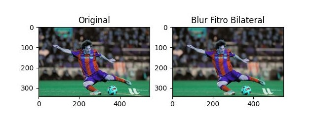
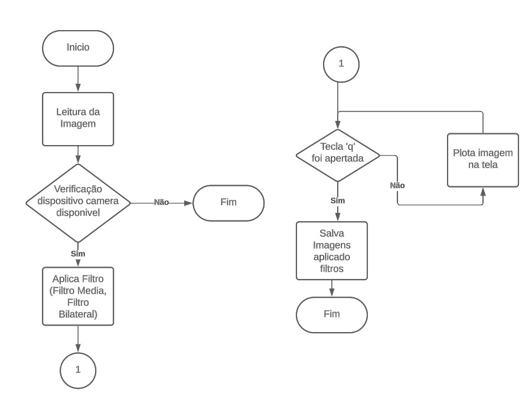
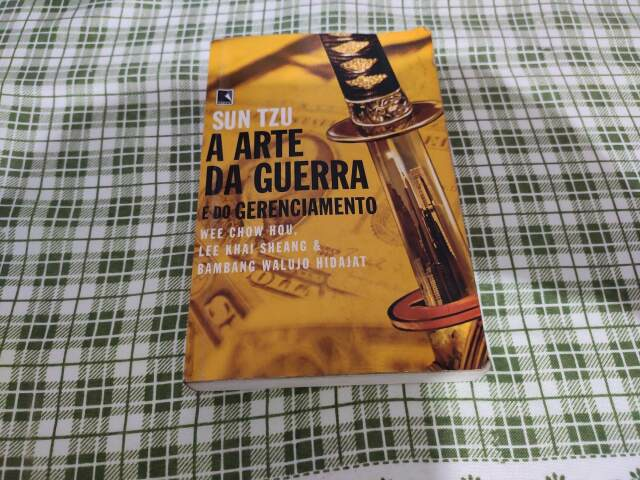
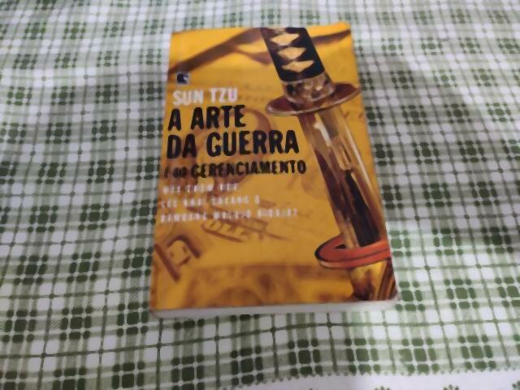

O processamento de vídeo desempenha um papel fundamental em diversas áreas,
como visão computacional, realidade virtual, jogos, vigilância por vídeo, entre outros.
O foco deste laboratório é discutir sobre métodos de filtragem a partir
a biblioteca OpenCV e aplica-las em imagem e vídeo.
Com o programa que faz a leitura da webcam, realize cada um dos experimentos de filtragem do tutorial, na imagem de entrada.
Salve os arquivos de imagem filtrada gerados através do próprio programa.
Fundamentos Básicos
O processamento de vídeo envolve a aplicação de técnicas para manipular, analisar e extrair informações de
sequências de imagens em movimento. Para realizar essas tarefas, utilizaremos a biblioteca OpenCV, uma poderosa
ferramenta para processamento de imagens e vídeos.
As principais operações básicas que iremos explorar incluem a leitura de imagens e vídeos a partir de arquivos,
visualização de imagens em janelas, salvamento de imagens em arquivos, captura de imagens da câmera e gravação de vídeos da câmera.
Além disso, iremos aprender sobre diferentes aspectos, como a velocidade de exibição das imagens em vídeo, a alteração da imagem
exibida em tempo real, e a realização de operações de processamento de imagem nos programas estudados
Antes de iniciar o trabalho com processamento, é imprescindível obter um melhor entendimento
de alguns conceitos fundamentais relacionados ao processamento de vídeo.
Imagem e Vídeo: Imagens são representações visuais de objetos, cenas ou fenômenos capturados através de dispositivos ópticos,
como câmeras fotográficas ou sensores de imagem. Elas são compostas por uma matriz de elementos chamados de pixels, que são os
pontos básicos de informação que compõem a imagem.
Cada pixel contém informações sobre a cor e a intensidade luminosa em um determinado ponto da imagem. Essas informações são armazenadas
e processadas digitalmente, permitindo a exibição, manipulação e análise das imagens em dispositivos eletrônicos, como computadores,
smartphones, tablets e telas de visualização.
As imagens podem ser classificadas em diferentes tipos, como imagens em preto e branco (tons de cinza), imagens em escala de cores
(RGB - vermelho, verde e azul) ou imagens em outros espaços de cores, como YUV ou HSV. Além disso, as imagens podem ser estáticas,
representando uma única cena, ou sequenciais, formando um vídeo.
No contexto do processamento de vídeo, as imagens são essenciais para realizar diversas tarefas, como detecção de objetos,
reconhecimento de padrões, análise de movimento, segmentação de objetos, entre outras aplicações. O processamento das imagens
permite extrair informações relevantes e realizar transformações que podem melhorar sua qualidade, ressaltar características
ou facilitar a interpretação dos dados visuais.
Pixel e Matriz de Pixels: Um pixel é o menor elemento em uma imagem ou quadro de vídeo e representa um valor
numérico que define sua cor ou intensidade. Uma matriz de pixels é uma grade bidimensional de pixels que compõem uma imagem ou quadro de vídeo.
Filtros: No processamento de imagens, um filtro é uma função matemática que é aplicada a cada pixel de uma imagem.
O filtro pode ser usado para melhorar a qualidade da imagem, remover ruído ou adicionar efeitos.
Alguns exemplos de filtros de processamento de imagens incluem:
Filtros de nitidez: esses filtros aumentam o contraste entre os pixels de uma imagem, tornando-a mais nítida.
Filtros de suavização: esses filtros reduzem o contraste entre os pixels de uma imagem, tornando-a mais suave.
Filtros de ruído: esses filtros removem o ruído de uma imagem, tornando-a mais limpa.
Filtros de efeitos: esses filtros adicionam efeitos especiais a uma imagem, como desfoque, vinheta ou preto e branco.
Materiais e Métodos
Este relatório foi divido em duas partes. Nesta primeira parte do laboratório, aplicaremos o métodos de filtragem de Média, Gaussiano, Mediano e Bilateral nas imagens do Lab1 - parte 3 e salvaremos a imagens para comparação.
Em seguida, na parte 2, com o programa que faz a leitura da webcam aplicaremos filtros de Média, Gaussiano, Mediano e Bilateral e salvaremos a imagens para comparação.
Materiais
A seguir, apresentamos os materiais utilizados em conjunto com suas respectivas descrições, a fim de criar um ambiente de trabalho adequado para a realização da
atividade prática no laboratório de Processamento de Vídeo. Esses materiais possibilitam a aquisição, manipulação e processamento eficiente e preciso de imagens e vídeos:
Sistema Operacional Ubuntu 22.04: O sistema operacional Ubuntu 22.04 é uma distribuição Linux amplamente reconhecida pela sua estabilidade e facilidade de uso. Sua utilização
no laboratório proporciona um ambiente propício para a execução dos programas e tarefas relacionados ao processamento de vídeo.
Webcam Digital Usb: Essa webcam é utilizada para realizar aquisição de imagens em tempo real durante as atividades práticas do laboratório.
Linguagem: Python é uma linguagem de programação popular e de alto nível, amplamente utilizada no processamento de vídeo devido à sua facilidade de uso e à
disponibilidade de bibliotecas poderosas. Neste laboratório, é utilizada a versão 3.10 ou superior do Python.
Bibliotecas OpenCV (4.7), Numpy (1.19.5): O OpenCV (Open Source Computer Vision) é uma biblioteca de código aberto amplamente utilizada para o processamento de
imagem e vídeo. O Numpy é uma biblioteca para Python que oferece suporte a arrays multidimensionais e funções matemáticas avançadas. Ambas as bibliotecas são utilizadas
para manipular e processar imagens e vídeos no laboratório.
IDE Visual Studio Code: Visual Studio Code: O Visual Studio Code é uma IDE (Integrated Development Environment) popular e de código aberto, que fornece um ambiente de
desenvolvimento completo para escrever, depurar e executar programas em Python. É a IDE escolhida para o desenvolvimento das atividades práticas durante o laboratório.
Métodos
Nesta primeira parte do trabalho foi desenvolvido o programa que faz a leitura e aplicação de varios filtros na imagem messi5.jpg.
Abaixo segue o programa l2_fitros.py desenvolvido juntamente com a descrição do seu funcionamento com diagramas de blocos.
L2_filtros.py
Diagrama de Blocos L1_filtros.py

Abaixo segue o plote da comparação da imagem do messi5.jpg original com os diversos tipos de filtros:
Comparação Messi Original vs Blur Filtro de Media
Comparação Messi Original vs Blur Filtro Gaussaino

Comparação Messi Original vs Blur Filtro Mediano

Comparação Messi Original vs Blur Filtro Bilateral

Na parte 2 do trabalho, foi desenvolvido o programa que faz a leitura da web cam e faz aplicação de varios
filtros na imagem captura.Quando for apertado a tecla 'q' é feito a captura da imagem e salva. Abaixo segue
o programa l2_webcam.py desenvolvido juntamente com a descrição do seu funcionamento com diagramas de blocos.
L2_webcam.py

Segue a baixo o resultado da aplicação dos filtros na captura de imagem com webcam:
Imagem Livro Arte da Guerra Autor

Imagem Livro Arte da Guerracom Filtro Media
Imagem Livro Arte da Guerra com Filtro Gaussaino
Imagem Livro Arte da Guerra com Filtro Mediano

Imagem Livro Arte da Guerra com Filtro Bilateral
Resultados e Análises
Durante a execução das atividades propostas, foram obtidos os seguintes resultados:
O código apresentado contém a implementação de várias técnicas de suavização de imagem usando OpenCV e Matplotlib.
As diferentes técnicas de filtragem aplicadas às imagens são as seguintes:
Gaussian Blur: Esta técnica aplica um kernel gaussiano à imagem, o que ajuda a reduzir o ruído e suavizar a imagem.
É comumente usado para tarefas de pré-processamento de imagens. Desfoque mediano: esta técnica substitui o valor de cada pixel pelo valor mediano de seus pixels vizinhos. É eficaz na
remoção de ruído de sal e pimenta da imagem. Filtro Bilateral: O filtro bilateral preserva as bordas enquanto suaviza o restante da imagem. Ele considera as diferenças
espaciais e de intensidade entre os pixels e é útil para redução de ruído, preservando características importantes da imagem.
Conclusões e Comentários Finais
Neste laboratório, aprendemos como aplicar o métodos de filtragens utilizando a biblioteca do opencv e consequimos verifica cada caso de uso de cada filtro em específico.